Slide 6 — Model for Stationary Time Series (Part 2)
Lesson 5 จบด้วยปัญหาสองข้อ บทนี้แก้ทีละข้อ
| ปัญหาจาก Lesson 5 | บทนี้แก้ด้วย | อ่านที่ |
|---|---|---|
| AR(2) ใช้ φ อะไรก็ได้หรือไม่ | φ ต้องอยู่ในสามเหลี่ยม | ตอน 1 |
| ACF ของ AR หน้าตาอย่างไร | Yule-Walker: ลดลงหรือเป็นคลื่น ไม่ตัด | ตอน 2 |
| ACF บอก p ของ AR ไม่ได้ | PACF: AR ตัดที่ PACF, MA ตัดที่ ACF | ตอน 3 |
| AR/MA ใช้ได้กับข้อมูลนิ่งเท่านั้น | ARIMA: เติม differencing d ครั้ง | ตอน 4 |
ข้อสอบมีสองภาค คือภาค concept และภาคปฏิบัติกับข้อมูลจริงซึ่งใช้ auto.arima1 ปีหลัง ๆ เน้น application มากกว่าทฤษฎี2 ข้อสอบเก่าเคยให้กราฟ ACF หรือ scatter plot มาให้ดูว่าเป็นโมเดลอะไร MA ไม่ค่อยมีใครทำผิด แต่ที่ยากคือเมื่อ AR กับ MA ผสมกัน3
สีในสมการ: สีฟ้า คือ shock \(w\) · สีส้ม คือพารามิเตอร์ (φ, θ) · สีดำคือค่าที่จดได้ \(X\)
| MA(q) | AR(p) | ARMA(p,q) | |
|---|---|---|---|
| เขียนว่า | \(X_t=\theta(B)\shk{w_t}\) โดย θ(B) \(=1+\theta_1B+\dots\) | \(\Phi(B)X_t=\shk{w_t}\) โดย \(\Phi(B)=1-\phi_1B-\dots\) | \(\Phi(B)X_t=\theta(B)\shk{w_t}\) |
| ACF | ตัดหลัง lag q เช่น MA(1) θ = −0.9 มี ρ₁ = −0.497 แล้วเป็นศูนย์4 | ไม่ตัด | ไม่ตัด |
| กรณีพิเศษ | ARMA(0,q) | ARMA(p,0)5 | \(X_t=0.6X_{t-1}+w_t+0.8w_{t-1}\) คือ \((1-0.6B)X_t=(1+0.8B)w_t\) |
สไลด์ชี้ปัญหาของ AR สองข้อ ข้อแรก ตัวแปร(ด้านขวาของสมการ) คือ \(X_{t-1},X_{t-2},\dots\) สัมพันธ์กันเอง (AR(1) φ = 0.9 มี \(X_{t-1}\) กับ \(X_{t-2}\) สัมพันธ์กันถึง 0.9) สมมติฐานของ regression จึงใช้ตรง ๆ ไม่ได้ ข้อสอง เลือก p ไม่ง่าย ซึ่งคือเหตุผลที่ต้องมี PACF ในตอนที่ 3
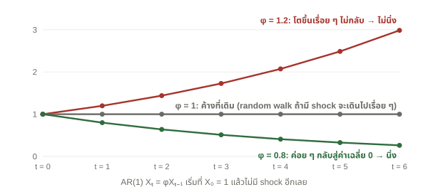
ภาพนี้คือความหมายของความนิ่ง ปล่อย AR(1) จาก \(X_0=1\) โดยไม่มี shock φ = 1.2 ได้ 1.2, 1.44, 1.73, … โตขึ้นไม่กลับ ส่วน φ = 0.8 ได้ 0.8, 0.64, 0.51, … กลับสู่ค่าเฉลี่ย φ จึงใช้ค่าอะไรก็ได้ไม่ได้ ค่าที่ R หรือ Python ประมาณได้จะอยู่ในช่วงที่นิ่ง ถ้าเกิน ผลจะไม่ converge6
ARMA ใช้ได้เมื่อข้อมูลนิ่งเท่านั้น คือไม่มี trend ไม่มี seasonal และ variance คงที่7 ข้อมูลจริงที่ไม่นิ่งพบบ่อยสองแบบ8
| ไม่นิ่งเพราะ | แก้ด้วย | เรียนที่ |
|---|---|---|
| มี trend (พบบ่อยมาก) | differencing กลายเป็น ARIMA | ตอน 4 |
| แกว่งไม่เท่ากัน | log หรือโมเดล variance (ARCH/GARCH) | ทีหลัง |
ค่าวันนี้ตามค่าเมื่อวานไปแรง แต่ถูกค่าเมื่อวานซืนดึงกลับ เช่น φ₁ = 1.1 กับ φ₂ = −0.3 รวมกันได้ 0.8 ซึ่งน้อยกว่า 1 อนุกรมจึงกลับสู่ค่าเฉลี่ยได้
แทน \(X_{t-1}=BX_t\) และ \(X_{t-2}=B^2X_t\) แล้วย้ายข้าง วงเล็บ 1 − φ₁B − φ₂B² คือ Φ(B): พหุนามลักษณะเฉพาะของกระบวนการ สมมติฐานเหมือน AR(1) คือ mean เป็นศูนย์ และ \(w_t\) อิสระจาก \(X_{t-k}\) ทุก k ≥ 1 สไลด์ยอมรับว่าเรื่องความนิ่งของ AR(2) ขึ้นไป becomes very theoretical จึงสอนเฉพาะเงื่อนไขสามเหลี่ยม9
\(X_t=1.1X_{t-1}-0.3X_{t-2}+w_t\) ได้ \(\Phi(B)=1-1.1B\,\mathbf{+}\,0.3B^2\) φ₂ = −0.3 กลายเป็น +0.3 เพราะมีเครื่องหมายลบนำหน้า จุดนี้ผิดเรื่องเครื่องหมายบ่อยที่สุด
มอง B เป็นตัวแปรธรรมดา x แล้วแก้ \(1-\phi_1x-\phi_2x^2=0\) ความนิ่งดูจากคือรากของ Φ(x) ในห้องมักเขียน B ส่วนหนังสือเขียน x หรือ z10 นี่คือทฤษฎีเดียวของวิชาที่ต้องใช้คณิต11 ข้อสอบเคยออกกำลังสามแล้วจาก 40 คนทำได้ 2 คน จึงจะออกแค่กำลังสอง12
ได้จากสูตรสมการกำลังสองโดยแทน \(a=-\phi_2\), \(b=-\phi_1\), \(c=1\) ตัวใต้รากบอกชนิดของราก ถ้า \(\phi_1^2+4\phi_2\ge0\) เป็นรากจริง ถ้าน้อยกว่า 0 เป็นรากเชิงซ้อน \(u\pm vi\) ที่มี modulus \(\sqrt{u^2+v^2}\) ซึ่งถ้ายังไม่เข้าใจจำนวนเชิงซ้อนก็ข้ามไปก่อนได้13 เพราะข้อสอบส่วนใหญ่เป็นรากจริง
| φ = (φ₁, φ₂) | \(\phi_1^2+4\phi_2\) | ราก | ผล |
|---|---|---|---|
| (1.1, −0.3) | 1.21 − 1.2 = 0.01 | \(\frac{1.1\pm0.1}{0.6}\) = 2 และ 1.667 | เกิน 1 ทั้งคู่ นิ่ง |
| (0.5, −0.5) | 0.25 − 2 = −1.75 | \(0.5\pm1.323i\) modulus 1.414 | นิ่ง |
ถ้ารากคือ \(x_1,x_2\) จะเขียนได้ \((1-x_1^{-1}B)(1-x_2^{-1}B)X_t=w_t\) เทียบสัมประสิทธิ์ได้ \(\phi_1=x_1^{-1}+x_2^{-1}\) และ \(\phi_2=-x_1^{-1}x_2^{-1}\) รวมกับ \(|x_i|>1\) ได้เงื่อนไขสามข้อที่ใช้แทนการหาราก
เงื่อนไขนี้ต้องจด ถ้าข้อใดข้อหนึ่งไม่จริง โมเดลนั้นไม่ใช่ AR(2) ที่นิ่ง และอาจเป็นกับดักในข้อสอบ14 ที่มาอยู่ใน(ดูภาคผนวก B หน้า 84 ของ Cryer and Chan) ไม่ต้องพิสูจน์
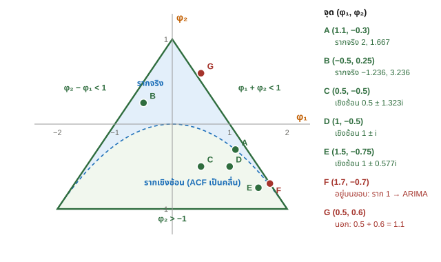
เงื่อนไขสามข้อคือเส้นตรงสามเส้นที่ล้อมเป็นสามเหลี่ยม มีจุดยอด (0, 1), (2, −1) และ (−2, −1)15 จุดในสามเหลี่ยมคือ AR(2) ที่นิ่ง เส้นประ \(\phi_1^2+4\phi_2=0\) แบ่งข้างในเป็นสองส่วน เหนือเส้นมีรากจริง ใต้เส้นมีรากเชิงซ้อน ซึ่งทำให้ ACF เป็นคลื่นในตอนที่ 2
1.1 − 0.3 = 0.8 < 1, −0.3 − 1.1 = −1.4 < 1, |−0.3| < 1 ครบทั้งสามข้อ นิ่ง ตรงกับราก 2 และ 1.667
−0.25 < 1, 0.25 + 0.5 = 0.75 < 1, 0.25 < 1 นิ่ง ราก −1.236 และ 3.236 ค่าสัมบูรณ์เกิน 1 ทั้งคู่
1.7 − 0.7 = 1 ไม่น้อยกว่า 1 อยู่บนขอบ แยกตัวประกอบได้ \((1-0.7x)(1-x)\) มีราก 1 พอดี (ตอนที่ 4)
0.5 + 0.6 = 1.1 ไม่นิ่ง แม้ φ แต่ละตัวจะน้อยกว่า 1
สไลด์วาดสามเหลี่ยมเดียวกันพร้อมเส้นโค้งแบ่งชนิดราก ลองเช็คจุด (1.8, 0.9): 1.8 + 0.9 = 2.7 เกิน 1 จึงอยู่นอกสามเหลี่ยม
0.4 + 0.5 = 0.9 < 1, 0.5 − 0.4 = 0.1 < 1, |0.5| < 1 จึงนิ่ง และ \(0.16+2=2.16>0\) รากจริง (ราก \(\frac{0.4\pm1.47}{-1}\) คือ −1.87 และ 1.07)
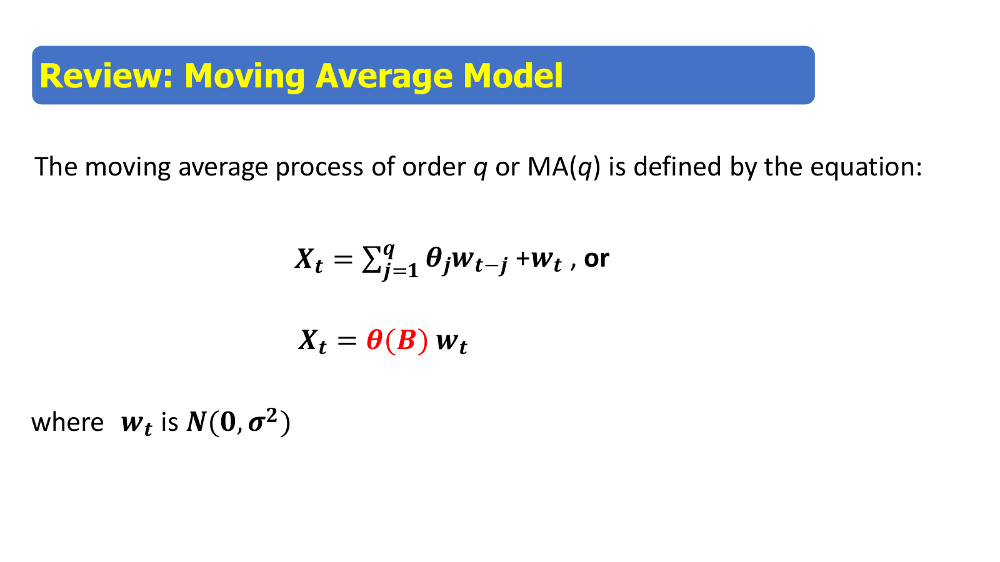
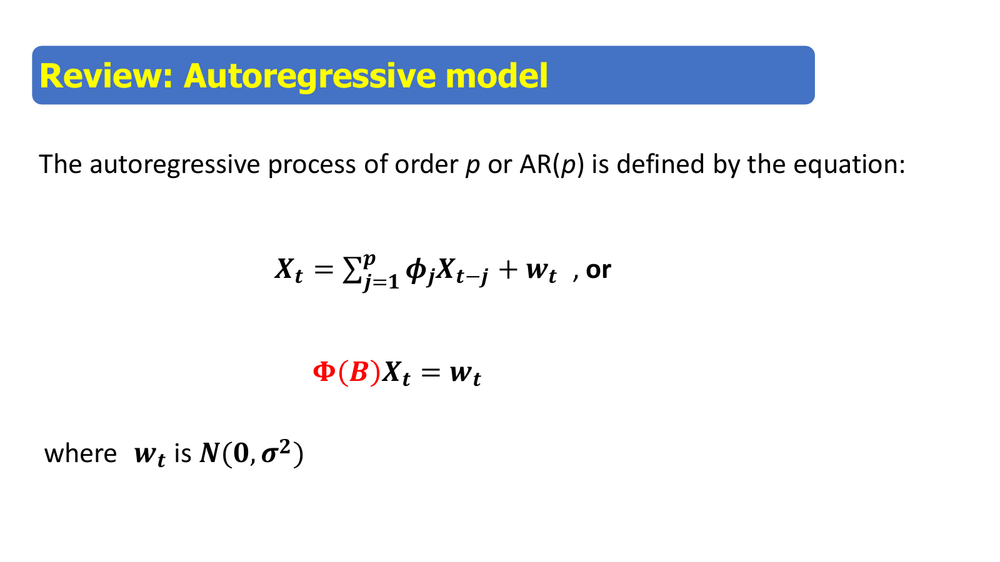


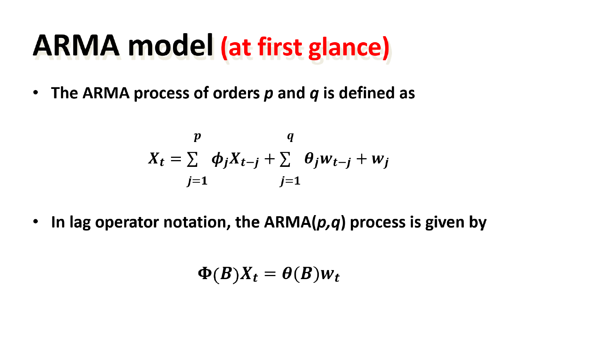


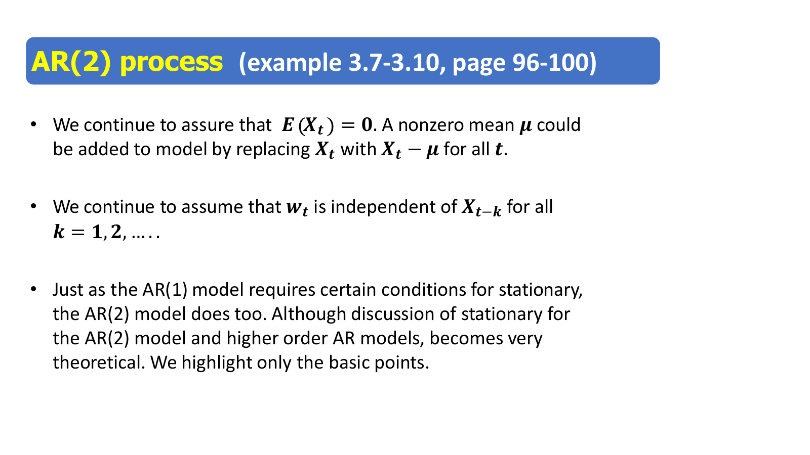

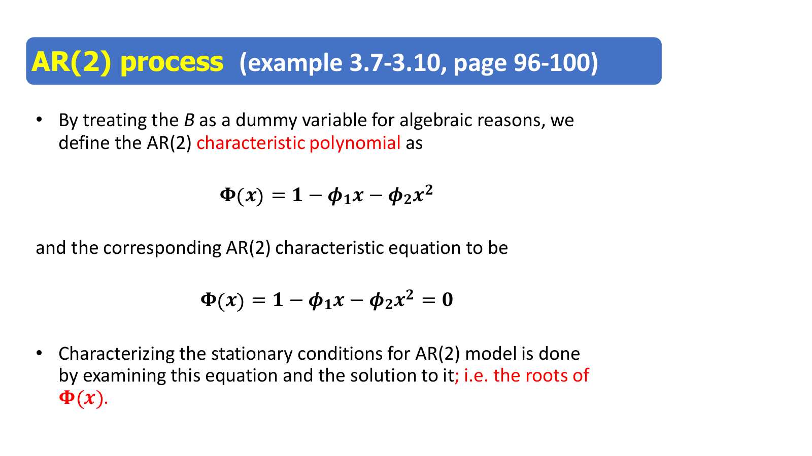


ใช้ทริกความนิ่งแบบ AR(1) ใน Lesson 5 แต่ได้สูตรวนซ้ำแทนสูตรปิด คูณทั้งสองข้างของ AR(2) ด้วย \(X_{t-h}\) แล้วหาค่าคาดหมาย ได้
สไลด์เขียนว่า E(XₜXₜ₋ₕ) = φ₁E(Xₜ₋₁Xₜ₋ₕ) + φ₂E(Xₜ₋₂Xₜ₋ₕ) + E(wₜXₜ₋ₕ) mean เป็นศูนย์ ด้านซ้ายจึงเป็น γₕ พอดี และพจน์สุดท้ายเป็นศูนย์เมื่อ h ≥ 1 เพราะ shock ใหม่ไม่เกี่ยวกับอดีต
ค่า ACF ที่ lag นี้ = φ₁ × ค่าก่อนหน้า + φ₂ × ค่าก่อนหน้าอีกตัว เรียกว่า สมการ Yule-Walker ใช้ได้กับ AR ทุกอันดับ (AR(1) คือ \(\rho_h=\phi\rho_{h-1}\), AR(3) เพิ่ม \(\phi_3\rho_{h-3}\))16 สมัยก่อนใช้ประมาณ φ แต่ปัจจุบันโปรแกรมทำให้ จึงไม่ได้เน้น17
\(\rho_1=\phi_1\rho_0+\phi_2\rho_{-1}=\phi_1+\phi_2\rho_1\) จึงได้ \(\rho_1=\dfrac{\phi_1}{1-\phi_2}=\dfrac{1.1}{1.3}=0.846\)
\(\rho_2=\phi_1\rho_1+\phi_2\rho_0=1.1(0.846)-0.3=0.631\)
\(\rho_3=1.1(0.631)-0.3(0.846)=0.440\)
ρ₄ = 0.295, ρ₅ = 0.192 ลดลงแต่ไม่เป็นศูนย์ ตรงกับ ARMAacf(ar = c(1.1, -0.3))
\(\rho_1=0.5/(1-0.3)=0.714\) และ \(\rho_2=0.5(0.714)+0.3=0.657\)
สไลด์บอกว่ามีสูตรปิดของ ACF AR(2) ในShumway กรณี (i)–(iii) หน้า 99 แยกตามชนิดราก ทุกกรณีให้ ρₕ → 0 แต่หน้าตาต่างกัน รากเชิงซ้อนทำให้แต่ละก้าวเหมือนหมุนไปบางมุมพร้อมกับหดลง ACF จึงวนบวกลบเป็นคลื่นที่ค่อย ๆ เล็กลง (damped sine wave) สไลด์ให้สี่กรณีที่อยู่ในสามเหลี่ยมทั้งหมด
| φ (จุดในสามเหลี่ยม) | ราก | ρ₁, ρ₂, ρ₃ | รูปร่าง |
|---|---|---|---|
| (1.1, −0.3) A | จริง 2, 1.667 | 0.846, 0.631, 0.440 | บวก ลดแบบเลขชี้กำลัง เหมือน AR(1) φ บวก |
| (−0.5, 0.25) B | จริง −1.236, 3.236 | −0.667, 0.583, −0.458 | สลับเครื่องหมาย ลดช้า เหมือน AR(1) φ ลบ |
| (0.5, −0.5) C | เชิงซ้อน modulus 1.414 | 0.333, −0.333, −0.333 | คลื่นที่หดเร็ว |
| (1, −0.5) D | เชิงซ้อน 1 ± i | 0.667, 0.167, −0.167 | ลงไปติดลบราว lag 3–5 แล้วกลับมาใกล้ศูนย์ |

สรุปจากสี่กราฟ: รากจริงให้ ACF ที่ดูเหมือน AR(1) รากเชิงซ้อนให้คลื่น และไม่มีกรณีไหนที่ ACF ตัดเป็นศูนย์ที่ lag 2 ACF จึงบอกไม่ได้ว่า p = 2
ลองเลื่อน φ₁, φ₂ ไปที่จุด A–D ในตารางแล้วดูรูปร่าง ถ้าเลื่อนออกนอกสามเหลี่ยม ตัวเลื่อนจะบอกว่าไม่นิ่ง
กรณี B บนสไลด์คือ (−0.5, 0.25) แต่โค้ด simulation ใน R_codes_2 ใช้ ar = c(-0.5,-0.25) ซึ่งเป็นอีกโมเดลหนึ่ง (รากเชิงซ้อน, ρ₁ = −0.4) sample ACF ในส่วนนั้นจึงไม่ตรงกับ population ACF ของกรณี B

ตัวอย่างนี้มีไว้ให้เห็นว่า ข้อมูลที่ขึ้นลงเป็นรอบไม่จำเป็นต้องมาจาก seasonal อาจเป็น AR(2) ที่มีรากเชิงซ้อน (จุด E ในสามเหลี่ยม)
\(X_t=1.5X_{t-1}-0.75X_{t-2}+w_t\) มีรากเชิงซ้อน \(1\pm0.577i\) มุมของรากคือ \(\arctan(0.577)=30^\circ\) ACF จึงวนครบรอบทุก 360/30 = 12 lag อนุกรมขึ้นลงเป็นรอบยาวคล้ายวัฏจักรธุรกิจ ต่างจาก seasonal ตรงที่รอบไม่สม่ำเสมอ เพราะ shock ใหม่รบกวนทุกช่วง

รันซ้ำด้วย ARMAacf(ar = c(1.5,-0.75), ma=0, 50) และ arima.sim(..., n = 144) ได้ ACF เป็นคลื่นรอบละราว 12 lag ทั้งในทฤษฎีและในข้อมูลจำลอง
AR(p) ใช้เงื่อนไขรากเดียวกัน แต่ไม่มีสามเหลี่ยมสำเร็จรูป เมื่อ p ≥ 3 บริเวณความนิ่ง quite abstract ต้องหารากด้วยโปรแกรม เช่น polyroot() ใน R และข้อสอบจะมีแค่สมการกำลังสอง18 ACF ของ AR(p) หาได้ด้วย Yule-Walker (Shumway หน้า 121) เป็นผลรวมของการลดแบบเลขชี้กำลัง (รากจริง) กับคลื่นที่หดลง (รากเชิงซ้อน)
| MA(1) θ = 0.9 | AR(1) φ = 0.9 | |
|---|---|---|
| ρ₂ | 0 พอดี | 0.81 |
| ρ₂₀ | 0 | 0.9²⁰ = 0.12 ยังไม่เป็นศูนย์ |
| ACF บอกอะไร | บอกได้ว่าควรใช้ MA หรือ AR แต่บอก p ของ AR ไม่ได้19 | |
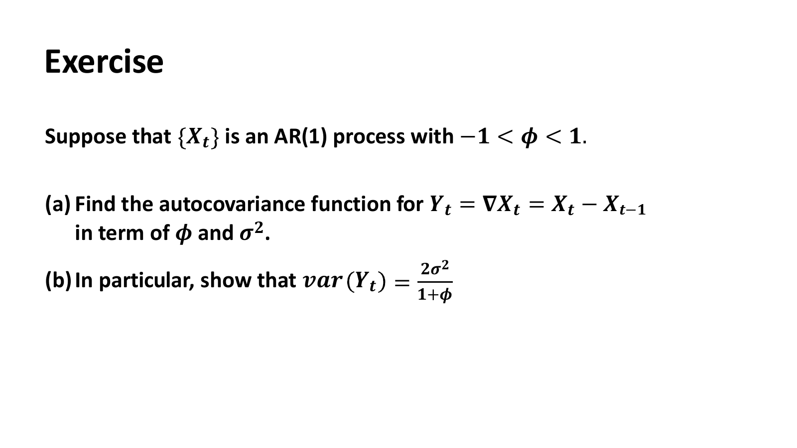
Exercise นี้ถามว่าถ้าเอา AR(1) ที่นิ่งแล้วมา difference อีกจะได้อะไร ฝึกใช้สูตร covariance และเป็นคำเตือนเรื่อง over-differencing ใน Lesson 7
\(\gamma_X(h)=\phi^{|h|}\gamma_0\) โดย \(\gamma_0=\sigma^2/(1-\phi^2)\)
\(\gamma_Y(h)=\mathrm{Cov}(X_t-X_{t-1},X_{t+h}-X_{t+h-1})=2\gamma_X(h)-\gamma_X(h+1)-\gamma_X(h-1)\)
\(\gamma_Y(0)=2\gamma_0-2\phi\gamma_0=2\gamma_0(1-\phi)=\dfrac{2\sigma^2(1-\phi)}{(1-\phi)(1+\phi)}=\dfrac{2\sigma^2}{1+\phi}\)
\(\gamma_Y(h)=\gamma_0\phi^{h-1}(2\phi-\phi^2-1)=-\gamma_0\phi^{h-1}(1-\phi)^2=-\dfrac{\sigma^2(1-\phi)}{1+\phi}\phi^{h-1}\)
Var(Y) = 2/1.5 = 1.333 และ γ_Y(1) = −(0.5/1.5) = −0.333 ได้ \(\rho_Y(1)=-0.25\)
Exercise อีกข้อให้วาด ACF ของ AR(1) สี่ค่า φ ด้วย \(\rho_h=\phi^h\) แล้วดูว่าต้องไปถึง lag ไหนจึงต่ำกว่า 0.05 ซึ่งถือว่า "nearly died out"
| φ | ρ₁, ρ₂, ρ₃ | ต่ำกว่า 0.05 ที่ lag |
|---|---|---|
| 0.6 | 0.6, 0.36, 0.216 | 6 (0.6⁶ = 0.047) |
| −0.6 | −0.6, 0.36, −0.216 | 6 (สลับเครื่องหมาย) |
| 0.3 | 0.3, 0.09, 0.027 | 3 |
| 0.95 | 0.95, 0.903, 0.857 | 59 (lag 20 ยังเท่ากับ 0.358 โจทย์จึงสั่ง "Do out to 20 lags") |
ACF ของ φ = 0.95 ดูเกือบเหมือน ACF ของอนุกรมที่มี trend ใน Lesson 3 ถ้าเห็น ACF ลดช้ามาก ต้องตรวจความนิ่งด้วย ADF ก่อน ไม่ใช่สรุปว่าเป็น AR(1) ทันที
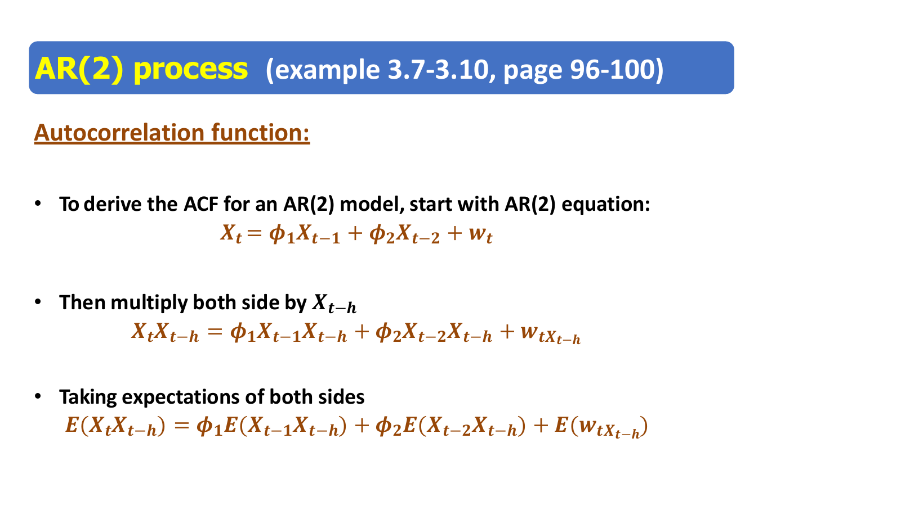
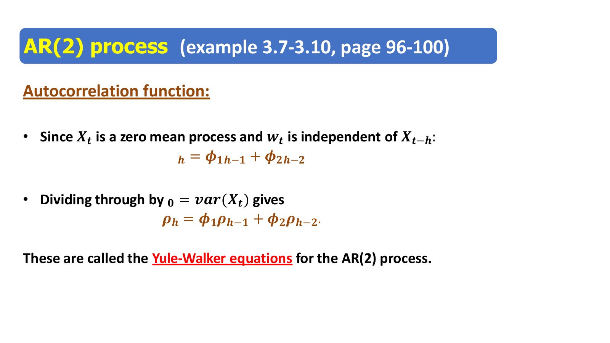
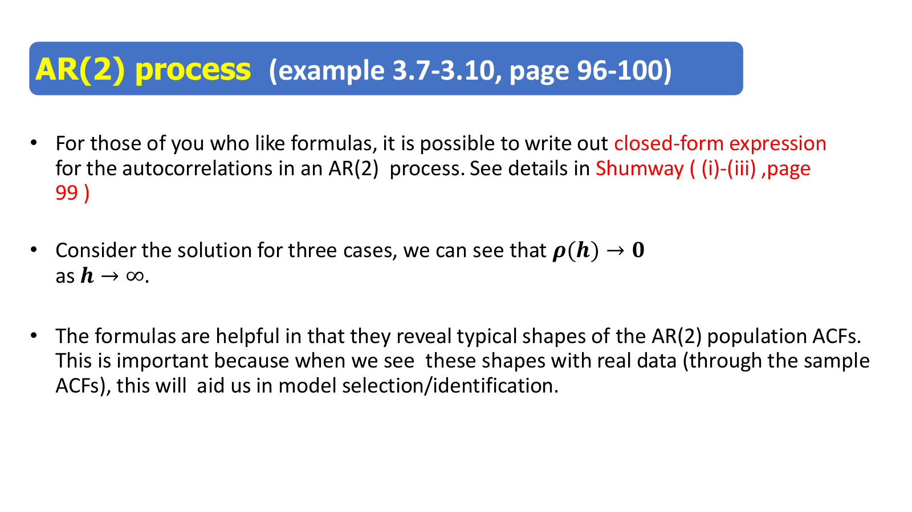


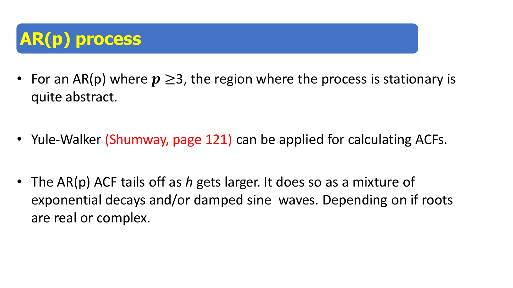
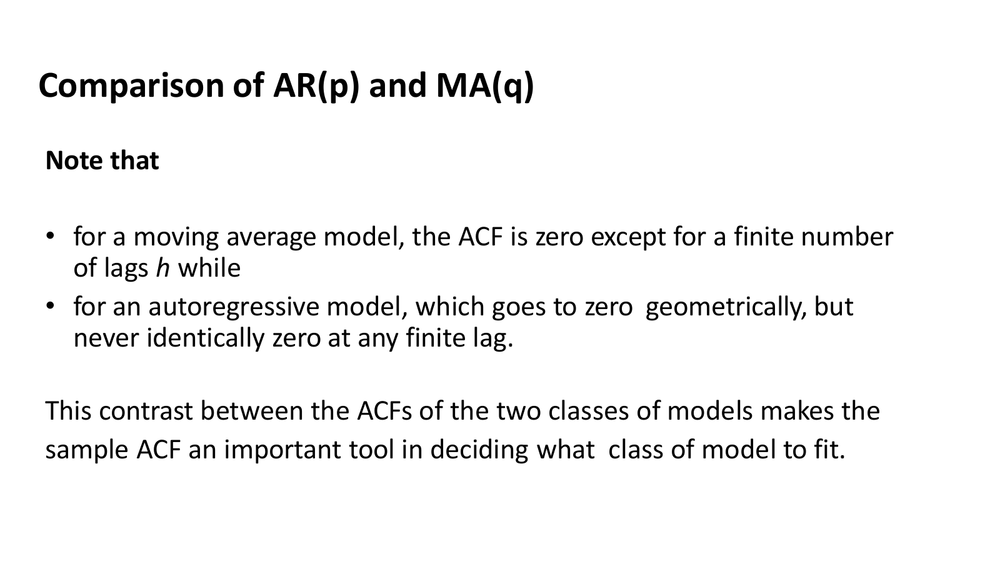

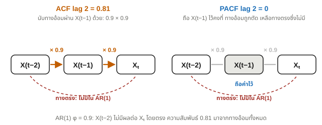
AR(1) φ = 0.9 มี ρ₂ = 0.81 ทั้งที่สมการมีแค่ \(X_{t-1}\) ค่า \(X_{t-2}\) ไม่ได้มีผลต่อ \(X_t\) โดยตรง 0.81 มาจากทางอ้อมผ่าน \(X_{t-1}\) ทั้งหมด (0.9 × 0.9) เหมือนการส่งข่าวต่อเป็นทอด ๆ ถ้าตัดทางอ้อมออก ส่วนที่เหลือเป็นศูนย์ เครื่องมือที่ตัดทางอ้อมนี้คือ PACF (partial autocorrelation function) ซึ่งต้องจดไว้ เพราะ ACF ไม่เหมาะกับ AR20
ลำดับการใช้งาน: ทำให้นิ่งด้วย differencing ก่อน แล้วดู ACF และ PACF ของอนุกรมที่ difference แล้ว เพื่อตัดสินว่าต้องมี AR หรือ MA กี่พจน์ ลำดับนี้คือขั้น identification ใน Lesson 7
partial correlation คือ สหสัมพันธ์แบบมีเงื่อนไข คือ correlation ของสองตัวแปรหลังจากเอาผลของตัวแปรอื่นออกแล้ว ถ้า Y มีตัวแปรต้น X₁, X₂, X₃ ความสัมพันธ์ของ X₁ กับ Y มี X₂, X₃ เจือปนอยู่ (confound) partial correlation คือการเอาอิทธิพลนั้นออก21
ตัวอย่างนี้มีไว้ให้เห็นว่า ข้อสรุปเปลี่ยนได้เมื่อเอาตัวแปรที่เจือปนเข้ามาคิด (Simpson's paradox, UC Berkeley 1973)22
| มองแบบ | ผล |
|---|---|
| ภาพรวม | ผู้ชายถูกรับราว 44% ผู้หญิงราว 35% ดูเหมือนลำเอียง |
| แยกทีละคณะ (เอาตัวแปร "คณะ" เข้ามา) | หลายคณะรับผู้หญิงเท่ากันหรือสูงกว่า ความต่างเกิดเพราะผู้หญิงสมัครคณะที่แข่งขันสูงมากกว่า |
สไลด์คำนวณ partial correlation ของ y กับ x₃ เมื่อตัดผลของ x₁, x₂ เป็นสองขั้น
y บน x₁, x₂ และ x₃ บน x₁, x₂
เพราะเราหาสหสัมพันธ์ของ "ส่วน" ของ y และ x3 ที่ x1 และ x2 ทำนายไม่ได้ จึงเป็นความสัมพันธ์ที่ไม่ผ่าน x₁, x₂
ในอนุกรมเวลา ตัวแปรที่เจือปนคือจุดเวลาที่อยู่ตรงกลาง23 PACF ที่ lag h คือ correlation ของ \(X_t\) กับ \(X_{t-h}\) หลังจากตัดผลของค่าที่อยู่ระหว่างกลางออก
| lag | ตัดผลของ | ผล |
|---|---|---|
| 1 | ไม่มีจุดคั่นกลาง | PACF lag 1 = ACF lag 1 พอดี24 |
| 2 | \(X_{t-1}\) | AR(1): รู้ \(X_{t-1}\) แล้ว ส่วนที่ยังสุ่มคือ \(w_t\) ซึ่งไม่เกี่ยวกับ \(X_{t-2}\) จึงได้ 0 |
| 3 | \(X_{t-1},X_{t-2}\) | เพิ่มเงื่อนไขไปเรื่อย ๆ ตาม lag |
\(X_h^{h-1}\) คือค่าทำนาย \(X_h\) จาก regression บน \(X_{h-1},\dots,X_1\) ส่วนต่างทั้งสองคือ ความคลาดเคลื่อนของการทำนาย ซึ่งเป็นสูตรเดียวกับ residual สองชุดใน 3.2 ถ้าอนุกรมเป็น normal นิยามเทียบเท่ากับ φₕₕ = corr(X₀, Xₕ | Xₕ₋₁, …, X₁)
| สัญลักษณ์ | กับดัก |
|---|---|
| \(\phi_{hh}\) | คล้าย φ ของ AR จึงอาจงงได้25 φ₁₁ คือ PACF lag 1, φ₂₂ คือ lag 2 |
| \(X_h^{h-1}\) | ตัวยกไม่ใช่เลขชี้กำลัง26 แต่บอกว่าใช้ตัวแปรทำนาย h − 1 ตัว |
การคำนวณ PACF จริงใช้ Durbin–Levinson ซึ่งทำย้อนหลังกับ ρ หลายตัว ไม่ออกสอบ มีไว้ให้เข้าใจแนวคิด2728 ค่า \(\hat\rho(h)\) ต้องคำนวณเป็น แต่ \(\hat\phi_{hh}\) ขอแค่อ่าน output เป็น29 สูตร lag 2 สั้นพอใช้ตรวจความเข้าใจ
ตัวเศษคือ ρ₂ ลบส่วนที่อธิบายได้ด้วยทางอ้อม (ρ₁ × ρ₁) ถ้าทางอ้อมอธิบายได้หมด ตัวเศษเป็นศูนย์
ρ₁ = 0.9, ρ₂ = 0.81 ได้ \(\phi_{22}=(0.81-0.81)/(1-0.81)=0\) ตัวเศษเป็นศูนย์พอดีเพราะ ρ₂ = ρ₁² ใน AR(1)
ρ₁ = −0.667, ρ₂ = 0.583 ได้ \(\phi_{22}=(0.583-0.444)/(1-0.444)=0.139/0.556=0.25\) เท่ากับ φ₂ พอดี
ρ₁ = −0.497, ρ₂ = 0 ได้ \(\phi_{22}=(0-0.247)/(1-0.247)=-0.328\) ไม่เป็นศูนย์ แม้ ρ₂ = 0
\(\phi_{22}=(0.25-0.25)/(1-0.25)=0\) ρ₂ = ρ₁² พอดี ตรงกับ AR(1) φ = 0.5
ใน AR(p) เมื่อรู้ \(X_{t-1},\dots,X_{t-p}\) แล้ว ส่วนที่เหลือคือ \(w_t\) ซึ่งไม่เกี่ยวกับค่าที่เก่ากว่า PACF ที่ lag เกิน p จึงเป็นศูนย์ (รายละเอียดในตัวอย่าง 3.14 (หน้า 106)) สไลด์ใช้ \(X_t=0.9X_{t-1}+w_t\) และ \(X_t=-0.5X_{t-1}+0.25X_{t-2}+w_t\) โดยใช้ ARMAacf(..., pacf=TRUE) หาค่าทฤษฎี และ pacf() กับข้อมูลจำลอง30
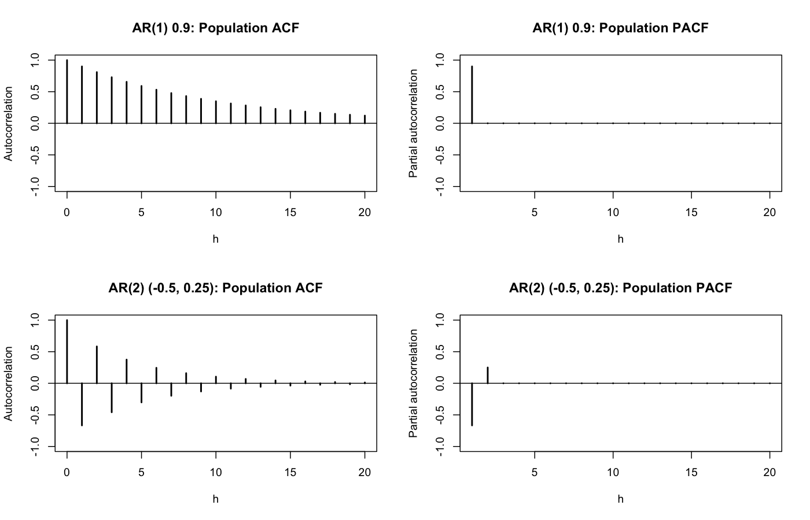
| ทางทฤษฎี | ACF | PACF | อ่าน p |
|---|---|---|---|
| AR(1) φ = 0.9 | 0.9, 0.81, 0.73 ลดช้า | 0.9 แล้วเป็นศูนย์ | 1 |
| AR(2) φ = (−0.5, 0.25) | −0.667, 0.583, −0.458 สลับเครื่องหมาย | −0.667, 0.25 แล้วเป็นศูนย์ | 2 |
แกนนอนของ PACF เริ่มที่ lag 1 (x = 1:20) เพราะ PACF ไม่มี lag 0

ข้อมูลจำลอง 150 ค่ามีเส้นประที่ \(2/\sqrt{150}=0.163\) AR(1) มีแค่ PACF lag 1 ทะลุเส้น ส่วน AR(2) มี PACF lag 2 = 0.163 แตะเส้นพอดี ทั้งที่ค่าทฤษฎีคือ 0.25 เมื่อฟิต arima(a2, order = c(2,0,0)) ได้ ar2 = 0.1641 (s.e. 0.0810) ประมาณ 2 เท่าของ s.e. จึงยังถือว่ามีนัยสำคัญ ในห้องก็เจอ PACF ของ AR(2) ที่ lag 4 โผล่เล็กน้อยทั้งที่ควรเป็น 031
ข้อมูลจริงไม่เคยสมบูรณ์แบบ ถ้า lag ที่สงสัยแตะเส้นพอดี ให้ลองทั้งสองอันดับแล้วเทียบ AIC ใน Lesson 7
ผลทั่วไปของ AR(p): \(\phi_{11},\dots,\phi_{pp}\) ไม่เป็นศูนย์ และ \(\phi_{hh}=0\) ทุก h > p PACF จึง"ตกเป็นศูนย์"หลัง lag p และPACF ช่วยหาอันดับของ AR(p) ได้ เหมือนที่ ACF ใช้หา q ของ MA32
สไลด์อ้างตัวอย่าง 3.16 (หน้า 107) และให้เงื่อนไข |θ| < 1 (invertible, Lesson 7) MA(1) ที่ invertible เขียนกลับเป็น AR(∞) ได้ คือ \(X_t\) ขึ้นกับค่าในอดีตทุกค่าด้วยน้ำหนักที่ลดลง ไม่มี lag ไหนที่ตัดได้ PACF ของ MA จึงค่อย ๆ ลด สไลด์ใช้ \(X_t=w_t-0.9w_{t-1}\) และ \(X_t=w_t+0.5w_{t-1}-0.25w_{t-2}\) (ใน R คือ ma = c(-0.9) และ ma = c(0.5,-0.25))
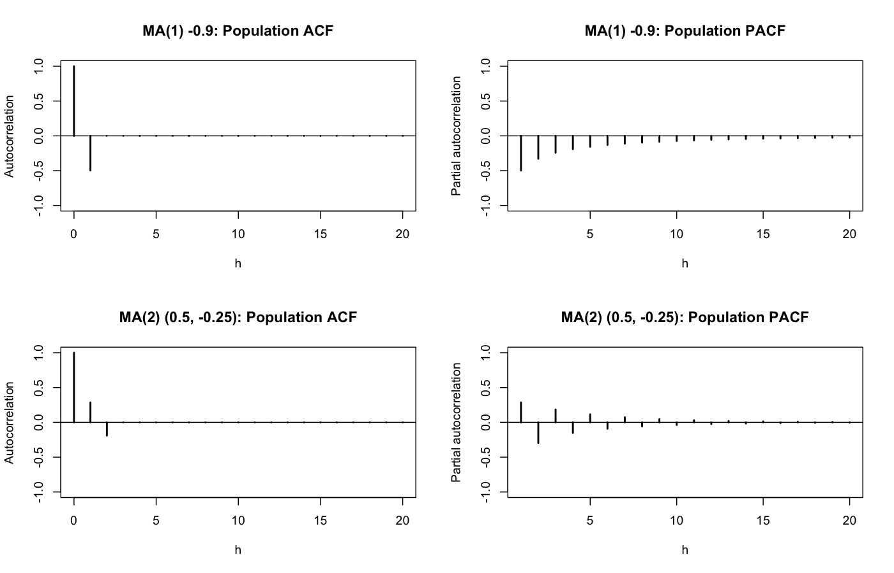
| ทางทฤษฎี | ACF | PACF |
|---|---|---|
| MA(1) θ = −0.9 | −0.497 แล้วเป็นศูนย์ | −0.497, −0.328, −0.243, … ลดช้า |
| MA(2) θ = (0.5, −0.25) | 0.286, −0.190 แล้วเป็นศูนย์ | 0.286, −0.296, 0.185, … สลับเครื่องหมายและลด |
ตรงข้ามกับ AR33 PACF ของ MA(q) มีสูตร แต่ซับซ้อนจนหนังสือไม่เขียน34 จึงจำแค่รูปร่าง
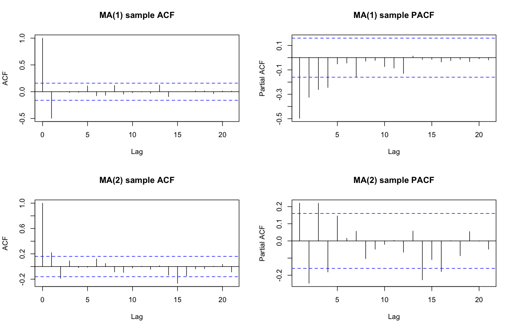
ข้อมูลจำลองให้รูปแบบเดียวกัน ACF ทะลุเส้นแค่ q lag แล้วตกลงในเส้น ส่วน PACF ยังทะลุเส้นหลาย lag ก่อนลดลง รูปแบบ "ACF ตัด PACF ลาก" จึงชัดเจน สไลด์สรุปว่าPACF ของ MA มีหน้าตาคล้าย ACF ของ AR อันดับเดียวกันมาก
ตารางจากหนังสือหน้า 10835 วิธีจำคือตัวที่ตัดบอกอันดับ
| ACF | PACF | |
|---|---|---|
| AR(p) | tail off (ลดลงช้า อาจสลับเครื่องหมายหรือเป็นคลื่น) | ตัดหลัง lag p |
| MA(q) | ตัดหลัง lag q | tail off |
| ARMA(p,q) | tail off | tail off |
แถว ARMA เป็นการบ้าน36 คำตอบคือ tail off ทั้งคู่ ไม่มีตัวไหนตัด จึงอ่าน p กับ q จาก ACF และ PACF ไม่ได้ ARMA ยากเพราะสองส่วนผสมกัน37

ACF ของ ARMA(1,1) θ = 0.25 ทั้งสี่ชุดหาร lag ติดกันได้ φ พอดีตั้งแต่ lag 2 เช่น φ = 0.9 ได้ 0.931, 0.838 และ 0.838/0.931 = 0.9 แต่ ρ₁ = 0.931 ไม่เท่ากับ φ เพราะส่วน MA เปลี่ยนเฉพาะ lag แรก ถ้าเห็นแค่กราฟจึงแยก ARMA(1,1) ออกจาก AR(1) ได้ยาก
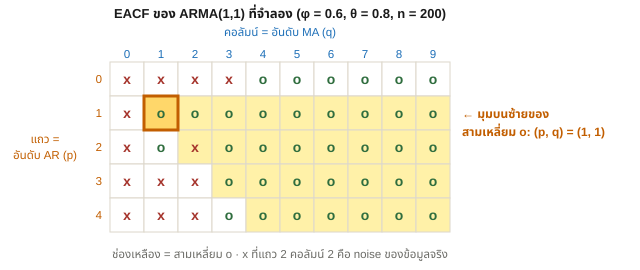
EACF (extended ACF) เป็นการบ้านให้ไปค้น38 เป็นตารางที่แถวคืออันดับ AR และคอลัมน์คืออันดับ MA ช่อง x คือยังมี autocorrelation เหลือ ช่อง o คือไม่มี ให้หามุมบนซ้ายของสามเหลี่ยมที่เต็มไปด้วย o มุมนั้นคือ (p, q) ที่แนะนำ ในภาพมุมอยู่ที่ (1, 1) ตรงกับโมเดลจริง ใน R ใช้ eacf() จาก package TSA
EACF ของตำราดูสวยมาก แต่กับข้อมูลจริงมักดูแย่39 เช่น ARMA(2,2) ที่จำลองได้สามเหลี่ยมที่สะอาดที่สุดที่ (0, 3) แนะนำ MA(3) แทน วิธีนี้ใช้กันเมื่อราว 20 ปีก่อน 10 ปีหลังใช้ auto.arima แทน40
| เห็นอะไร | ใช้อะไรหาอันดับ |
|---|---|
| ACF ตัด | q ของ MA จาก ACF |
| PACF ตัด | p ของ AR จาก PACF |
| ไม่มีตัวไหนตัด | EACF หรือ auto.arima41 |
AR(2) เพราะ ACF tail off และ PACF ตัดหลัง lag 2
> set.seed(2603630) > eacf(arima.sim(list(order=c(1,0,1), ar=0.6, ma=0.8), n=200)) AR/MA 0 1 2 3 4 5 6 7 8 9 10 11 12 13 0 x x x x o o o o o o o o o o 1 x o o o o o o o o o o o o o 2 x o x o o o o o o o o o o o 3 x x x o o o o o o o o o o o 4 x x x o o o o o o o o o o o > eacf(arima.sim(list(order=c(2,0,2), ar=c(0.5,-0.5), ma=c(0.8,-0.2)), n=200)) AR/MA 0 1 2 3 4 5 6 7 8 9 10 11 12 13 0 x x x o o o o o o o o o o o 1 x x x o o o o o o o o o o o 2 x o o o o o o o o o o o o o 3 x o o x o o o o o o o o o o 4 x o x x o o o o o o o o o o


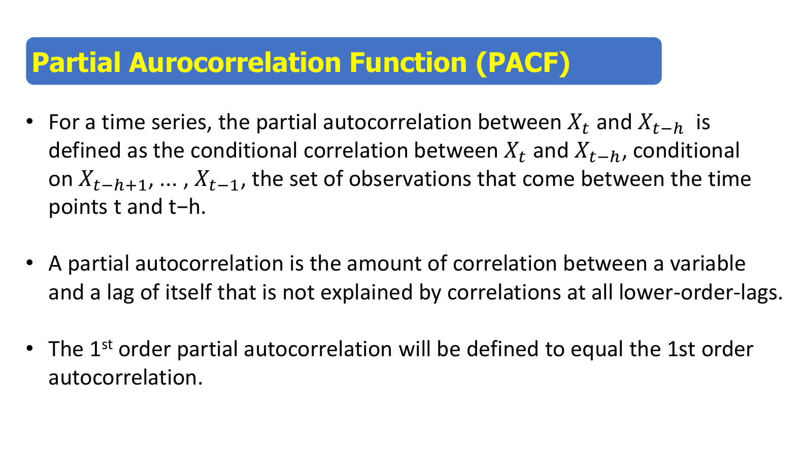
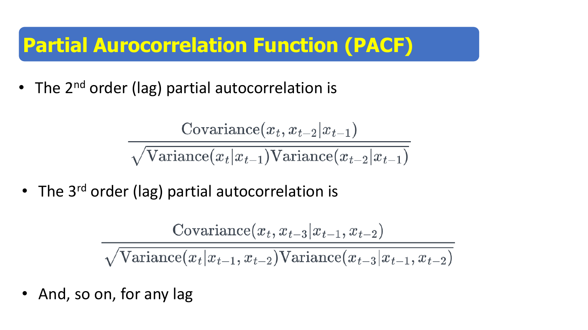


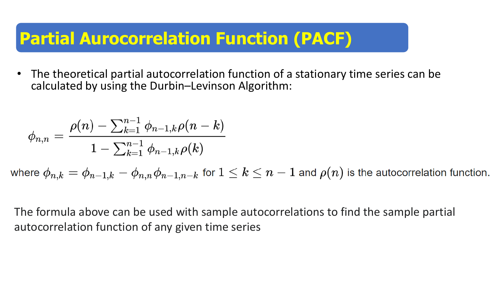

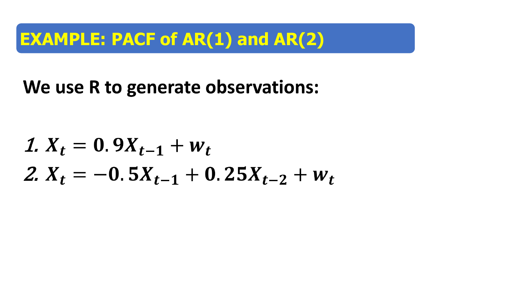


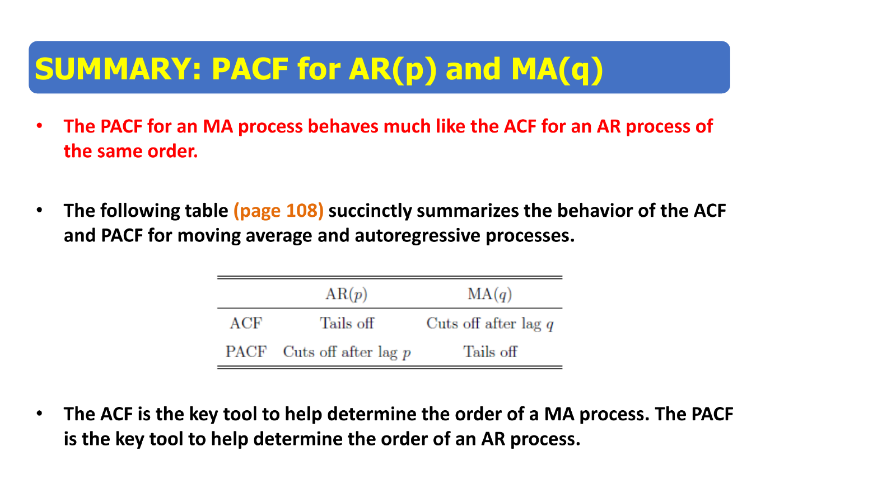
ทุกโมเดลจนถึงตอนนี้ใช้ได้กับข้อมูลนิ่งเท่านั้น แต่ข้อมูลจริงส่วนใหญ่มี trend เช่น อุณหภูมิโลกใน Lesson 3 ตัว I (Integrated) ทำให้ Box-Jenkins ใช้กับข้อมูลที่มี trend ได้ แค่เติม d เข้าไป42 คำว่า integrated มาจากทิศกลับของ differencing ถ้า \(\nabla X_t\) เป็น ARMA ค่า \(X_t\) ได้จากการรวมสะสม \(\nabla X_t\) กลับขึ้นไป
แบบจำลอง trend คือ \(X_t=\mu_t+Y_t\) โดย \(\mu_t\) เป็น trend ที่แน่นอน และ \(Y_t\) นิ่ง จำนวนครั้งที่ต้อง difference ดูจากจำนวนจุดหักของพหุนาม ดีกรี n หักได้ n − 1 ครั้ง43
| trend \(\mu_t\) | จุดหัก | d |
|---|---|---|
| เส้นตรง \(\beta_0+\beta_1t\) | 0 | 1 |
| พาราโบลา \(\beta_0+\beta_1t+\beta_2t^2\) | 1 | 2 |
ข้อสอบเก่าเคยให้พิสูจน์ว่าทำไม quadratic trend ไม่นิ่ง และทำไมต้อง difference สองครั้ง44
\(Y_t=\beta_0+\beta_1t+\beta_2t^2+w_t\)45
\(E(Y_t)=\beta_0+\beta_1t+\beta_2t^2\) ขึ้นกับ t ขัดเงื่อนไข mean คงที่ของความนิ่ง
\(t^2-(t-1)^2=2t-1\) จึงได้ \(\nabla Y_t=\beta_1+\beta_2(2t-1)+w_t-w_{t-1}\) mean \(=\beta_1+\beta_2(2t-1)\) ยังขึ้นกับ t เป็นเส้นตรง46
\((2t-1)-(2t-3)=2\) จึงได้ \(\nabla^2Y_t=2\beta_2+w_t-2w_{t-1}+w_{t-2}\) mean \(=2\beta_2\) คงที่ และ variance \(=6\sigma^2\) คงที่ จึงไม่มี trend และถือว่านิ่ง
อนุกรมเป็น ARIMA(p,d,q) ถ้า difference d ครั้งแล้ว \(\nabla^dX_t=(1-B)^dX_t\) เป็น ARMA(p,q) ที่นิ่ง ต่างจาก ARMA แค่ตัว \((1-B)^d\) ซึ่งเติมเพราะ \(X_t\) เองนิ่งไม่พอ47 บางเว็บเขียนเป็น \(\Phi(B)\nabla^dX_t\) ซึ่งเป็นอันเดียวกัน48
| ตัวเลข | คือ | เป็นจำนวนพารามิเตอร์ไหม |
|---|---|---|
| p | อันดับ AR | ใช่ (φ p ตัว) |
| d | จำนวนครั้งที่ difference | ไม่ใช่49 |
| q | อันดับ MA | ใช่ (θ q ตัว) |
ARIMA(1,1,1) มีพารามิเตอร์ที่ต้องประมาณสองตัวคือ φ กับ θ ไม่ใช่สามตัว และทุกครั้งที่ difference ข้อมูลหายไปหนึ่งจุด เช่น 40 จุดเหลือ 3950
| เขียนว่า | หมายถึง | ไม่ใช่ |
|---|---|---|
| \(\nabla^d\) | ทำ difference d ครั้ง | ยกกำลังของตัวเลข |
| \((1-B)^2=1-2B+B^2\) | \(X_t-2X_{t-1}+X_{t-2}\) | \(1-B^2\) ซึ่งให้ \(X_t-X_{t-2}\)51 |
ถ้า \(E(\nabla^dX_t)=\mu\) ไม่เป็นศูนย์ ให้เติมค่าคงที่ \(\alpha=\mu(1-\phi_1-\dots-\phi_p)\) ซึ่งเป็นสูตรเดียวกับ intercept ของ AR ใน Lesson 5
ARIMA(1,1,0) ที่ \(\nabla X_t\) มี mean 2 และ φ = 0.5 ได้ α = 2(0.5) = 1 แปลว่า X เพิ่มขึ้นเฉลี่ย 2 หน่วยต่อช่วง เรียกว่า drift
สไลด์เน้นว่าในข้อมูลจริง differencing อันดับ d > 2 แทบไม่ต้องใช้ ส่วนใหญ่difference ครั้งเดียว หรือบางครั้งสองครั้งก็พอ บางครั้งหลัง log และ d = 3 จะไม่ออกสอบ52 ARIMA ครอบคลุมทุกโมเดลที่เรียนมา53
| ชื่อ | เท่ากับ |
|---|---|
| AR(p) | ARIMA(p,0,0) |
| MA(q) | ARIMA(0,0,q) |
| ARMA(p,q) | ARIMA(p,0,q) |
| ARI(p,d) | ARIMA(p,d,0) |
| IMA(d,q) | ARIMA(0,d,q) |
IMA(d,q) เขียน d ก่อน แต่ ARIMA(0,d,q) d อยู่ตรงกลาง อีกสองครั้งจะเรียน SARIMA ซึ่งเป็นโมเดลสุดท้ายของ Box-Jenkins54
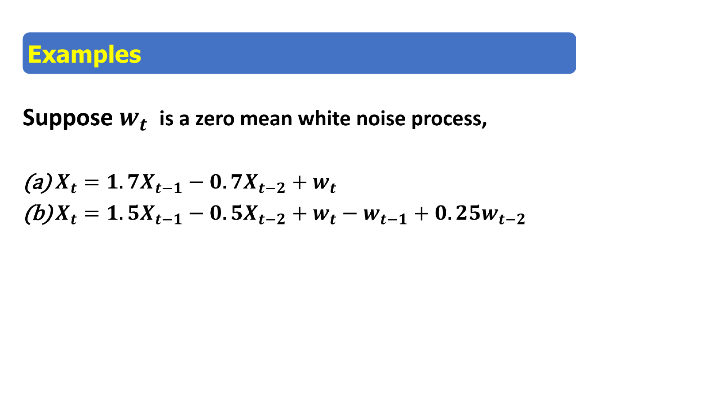
แนวข้อสอบที่ชอบออกคือให้สมการที่ดูเหมือนโมเดลหนึ่ง แล้วถามว่าเป็นโมเดลอะไรจริง ต้องตรวจเงื่อนไขสามเหลี่ยมก่อน มิฉะนั้นจะโดนหลอก55 วิธีคือย้าย X ไปซ้าย w ไปขวา เขียนด้วย B แล้วแยกตัวประกอบ ถ้ามีวงเล็บ \((1-B)\) ออกมา นั่นคือ d
φ₁ + φ₂ = 1.7 − 0.7 = 1 ไม่น้อยกว่า 1 จึงไม่ใช่ AR(2) ที่นิ่ง (จุด F บนขอบสามเหลี่ยม)56
\((1-1.7B+0.7B^2)X_t=w_t\)
สองจำนวนที่บวกกันได้ 1.7 และคูณกันได้ 0.7 คือ 1 กับ 0.7 จึงได้ \((1-0.7B)(1-B)X_t=w_t\)
\((1-B)X_t=\nabla X_t\) จึงได้ \((1-0.7B)\nabla X_t=w_t\) คือ \(\nabla X_t\) เป็น AR(1) φ = 0.7 วงเล็บ \((1-B)\) คือ d ไม่ต้องไปแก้หาราก57
\((1-1.5B+0.5B^2)X_t=(1-B+0.25B^2)w_t\) ดูเหมือน ARMA(2,2) แต่ไม่ใช่59
บวกได้ 1.5 คูณได้ 0.5 คือ 1 กับ 0.5: \((1-0.5B)(1-B)\)
\(1-B+0.25B^2=(1-0.5B)^2\)
\((1-0.5B)(1-B)X_t=(1-0.5B)(1-0.5B)w_t\) ตัด \((1-0.5B)\) ทั้งสองข้างแล้วเหลือ 1 − B60 ได้ \((1-B)X_t=(1-0.5B)w_t\)
1.4 − 0.4 = 1 ไม่ผ่านสามเหลี่ยม \((1-1.4B+0.4B^2)=(1-0.4B)(1-B)\) จึงเป็น ARIMA(1,1,0) ที่ \(\nabla X_t\) เป็น AR(1) φ = 0.4
IMA(1,1) คือ \(X_t=X_{t-1}+w_t-\theta w_{t-1}\) วันนี้เท่ากับเมื่อวาน บวก shock ใหม่ และหัก shock เมื่อวานบางส่วน ในข้อสอบให้เขียน \((1-B)X_t\) เพื่อระบุ d ชัด ๆ61 เป็นโมเดลที่นิยมในเศรษฐศาสตร์ ถ้า θ = 0 เหลือ random walk และใน Lesson 7 จะเห็นว่าค่าพยากรณ์ของมันเท่ากับ simple exponential smoothing ที่ α = 1 − θ
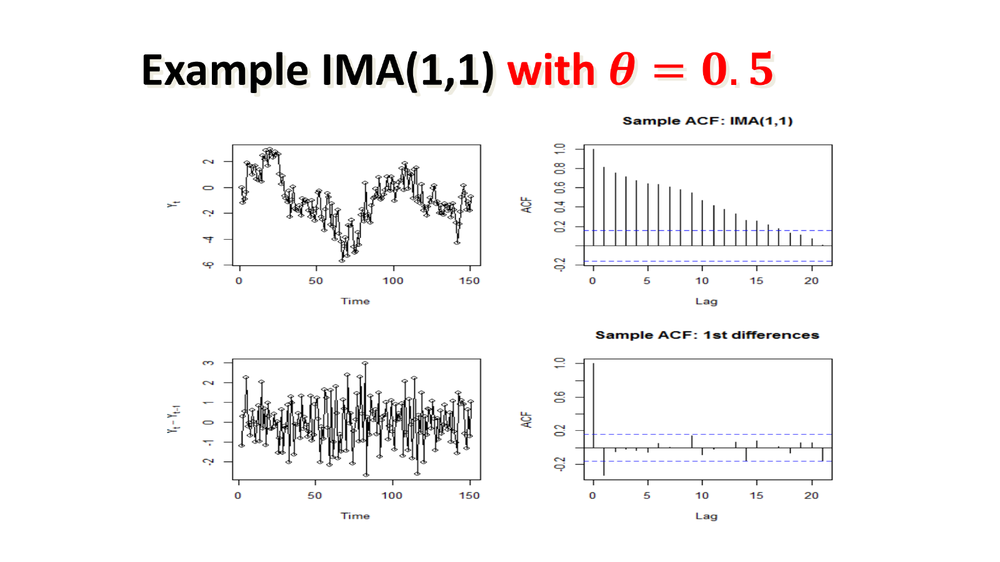
อ่านกราฟเป็นคู่ "ก่อน/หลัง difference"62
| IMA(1,1) θ = 0.5 | กราฟอนุกรม | ACF | สรุป |
|---|---|---|---|
| \(X_t\) | เดินขึ้นลงเป็นช่วงยาวเหมือน random walk | ลดช้ามาก ยังเกิน 0.2 ถึงราว lag 12 | ไม่นิ่ง |
| \(\nabla X_t\) | แกว่งรอบศูนย์ | แท่งเดียวที่ lag 1 ≈ −0.4 (ทฤษฎี \(-0.5/1.25=-0.4\)) | MA(1) → X เป็น ARIMA(0,1,1) |
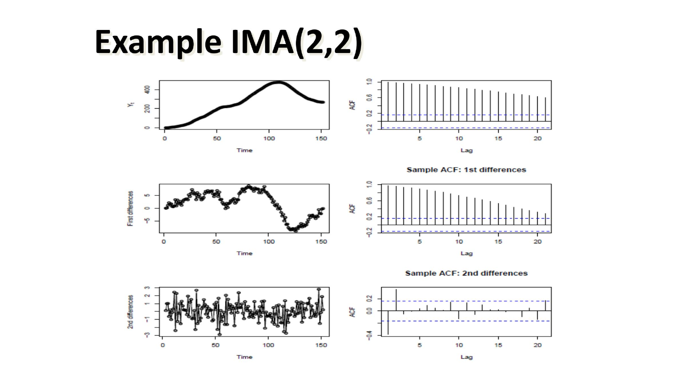
IMA(2,2) ต้อง difference สองครั้งจึงเป็น MA(2) อ่านสามแถวตามลำดับ63
| IMA(2,2) | กราฟอนุกรม | ACF | สรุป |
|---|---|---|---|
| \(X_t\) | โค้ง ขึ้นแล้วลง | ใกล้ 1 ทุก lag | ไม่นิ่ง |
| \(\nabla X_t\) | ยังมี trend ขึ้นแล้วลงเป็นช่วงยาว | ยังลดช้า | difference ครั้งเดียวไม่พอ |
| \(\nabla^2X_t\) | แกว่งรอบศูนย์ | ทะลุเส้นที่ lag 1, 2 แล้วอยู่ในเส้น | MA(2) → X เป็น ARIMA(0,2,2) |
แนวควิซจะให้กราฟแบบนี้แล้วให้ทายโมเดล โดยไม่ออก d = 364 ขั้นตอนคือ difference ทีละครั้งจนกว่า ACF จะไม่ลดช้า แล้วอ่าน q จาก ACF (หรือ p จาก PACF) ของอนุกรมสุดท้าย จำนวนครั้งที่ difference คือ d
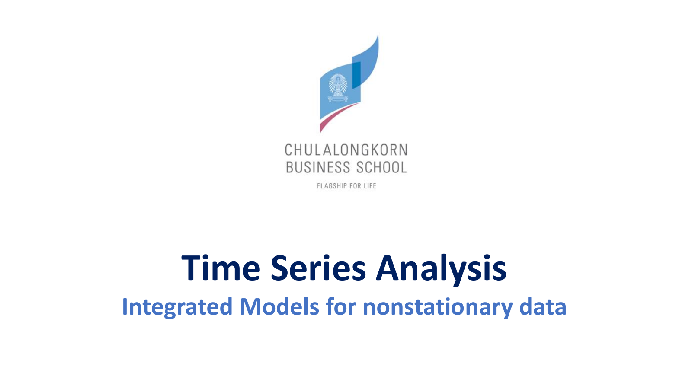
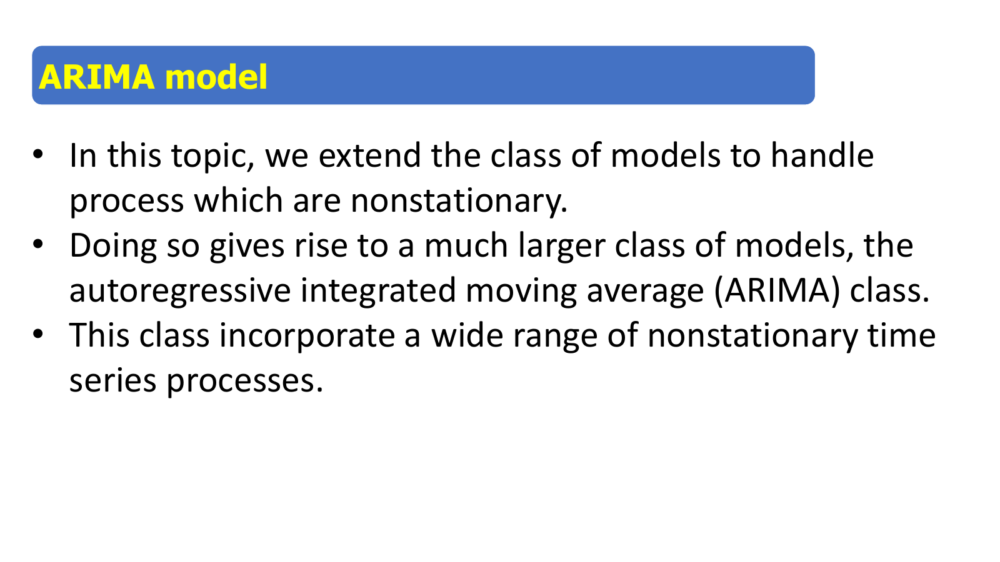


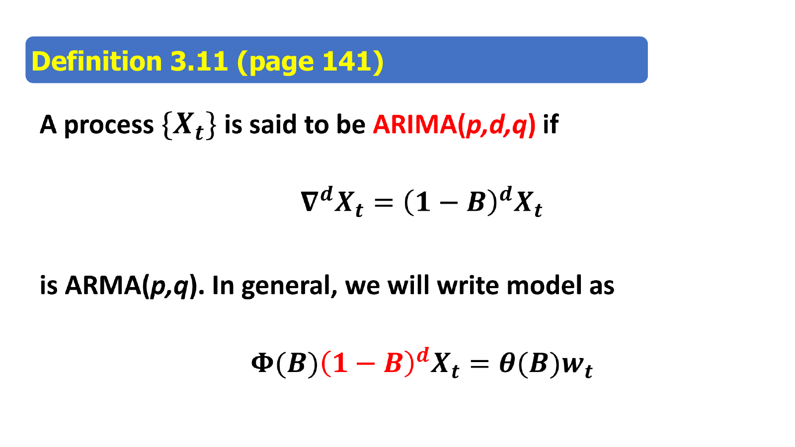
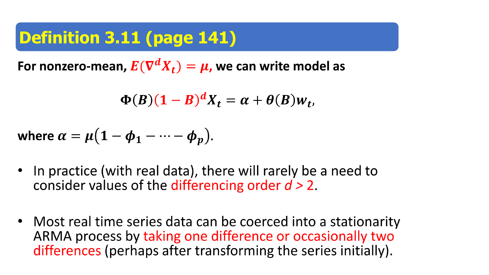
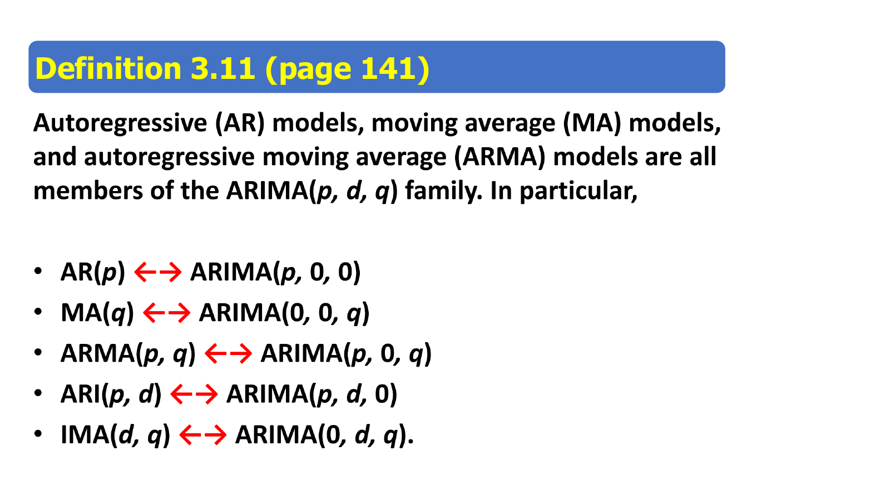


ลองฝึกต่อในแบบฝึก Lesson 6 หรืออ่านต่อ Lesson 7 — ARIMA identification และ estimation
ตัวเลขยกในเนื้อหาชี้มาที่รายการนี้ แต่ละรายการระบุคลาสและนาทีของคลิป พร้อมถ้อยคำในคลิปเมื่อมี
| หน้า | เนื้อหา | อยู่ในตอน |
|---|---|---|
| 1 | ปก Model for Stationary Time Series (Part 2) | etc — ปก |
| 2–15 | ทบทวน MA, AR, เงื่อนไขความนิ่ง, ARMA, AR(2) characteristic polynomial และสามเหลี่ยม | ตอน 1 |
| 16–26 | ACF ของ AR(2), Yule-Walker, ตัวอย่าง, AR(p) เทียบ MA(q), Exercise | ตอน 2 |
| 27–43 | PACF, นิยาม φ_hh, Durbin–Levinson, PACF ของ AR และ MA, ตารางสรุป | ตอน 3 |
| 44–55 | ARIMA(p,d,q), Examples (a) (b), IMA(1,1) และ IMA(2,2) | ตอน 4 |
แหล่งอื่นที่ใช้: Class 6 ทั้งคาบ (0:00–2:08), Class 7-2 ที่ 0:21 (การเขียน B เป็น x), ไฟล์ R_codes.txt และ EXERCISE.pdf (CLASS 6), R_codes_2.txt (CLASS 5)